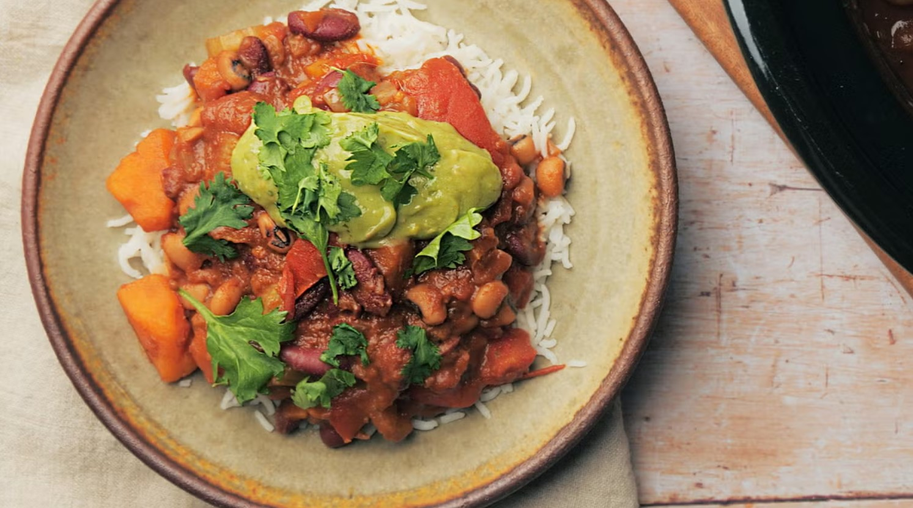

Home
Vegan slow cooker chilli

Description
When winter arrives, we love bringing out the slow cooker for homemade chilli and this vegan recipe is one of our all time favourites. A medley of vegetables and beans are simmered in a cumin, paprika and chilli spiced tomato sauce, creating a flavourful dish to feed a crowd.
Spoon over fluffy rice and top with guacamole for the ultimate Mexican feast.
Ingredients
- 2 tsp. vegetable oil
- 1 large onion, finely chopped
- 1/2 -1tbsp medium or hot chilli powder, to taste
- 1 tsp. ground cumin
- 1 tsp. smoked paprika
- 2 garlic cloves, crushed
- 1 Tbsp. tomato purée
- 2 celery sticks, finely sliced
- 1 carrot, peeled and chopped
- 1 red pepper, finely sliced
- 1 large sweet potato, peeled and cut into 2cm pieces
- 400 g tin chopped tomatoes
- 400 g tin kidney beans, drained and rinsed
- 400 g tin black eyed beans, drained and rinsed
- 400 ml vegan vegetable stock
- 25 g vegan dark chocolate
- small handful coriander leaves, roughly chopped (optional)
Method
- Heat oil in a large pan over medium heat, add onion with a large pinch of salt and cook for 10min, stirring regularly, until softened.
- Stir in the spices, garlic and tomato purée, and cook for 1min, until fragrant. Transfer to a slow cooker.
- Add the vegetables, tinned tomatoes, beans and stock.
- Cook on high for 4hr, until the sweet potato is cooked through. Stir through the dark chocolate until melted, and sprinkle with coriander, if using.
- Serve with rice and guacamole, if you like.